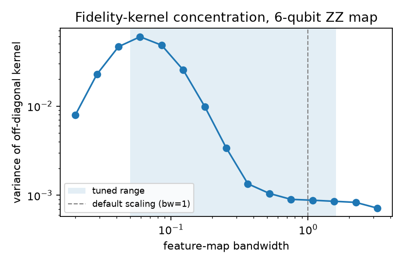
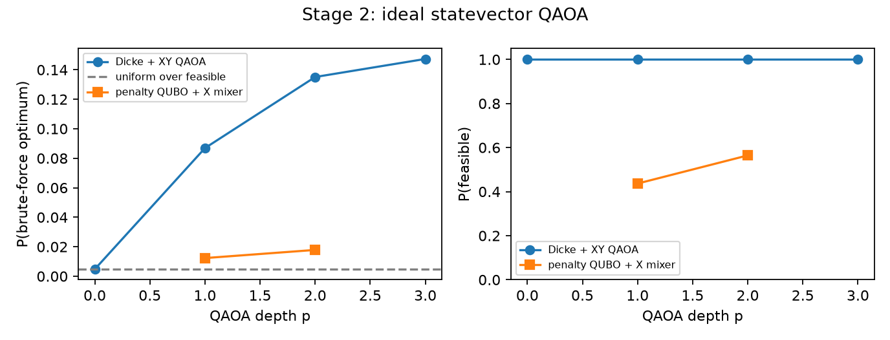
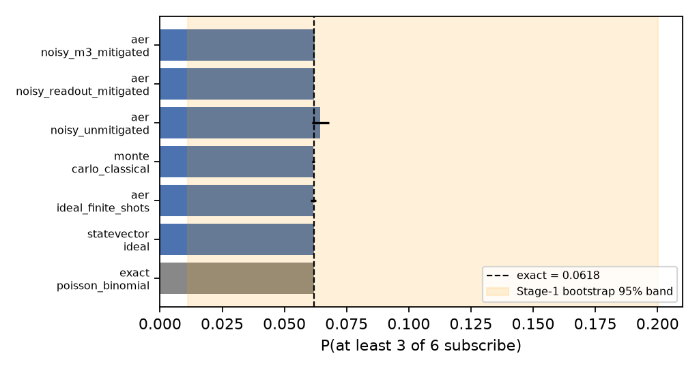
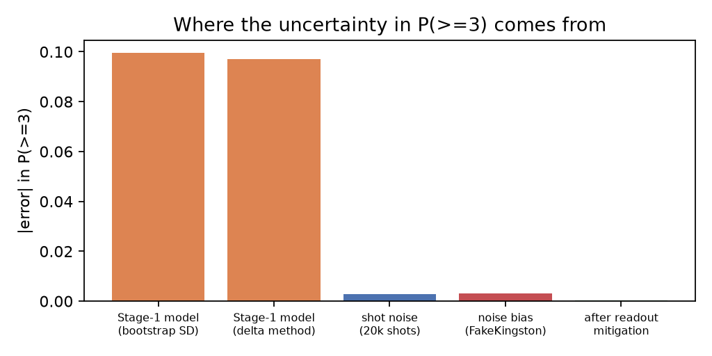

Six customers, one campaign. Every quantum number checked.
A three-stage Qiskit pipeline for a bank's term-deposit campaign: predict who will subscribe, pick six with a QAOA circuit that can only return valid picks, and estimate the chance that three of them say yes.
| Qubit | Customer | p(subscribe) | Deposit | Cost | Capacity | Net value |
|---|
What we submit, and where each number lives.
Three stages. One set of probabilities.
Stage 1's probabilities flow unchanged into Stages 2 and 3. A 25-point checker fails the build if any ID or number drifts between files.
A quantum kernel, tuned so it isn't flat.
Six-qubit ZZ feature-map states feed a fidelity kernel and a projected kernel. At the default scaling, kernel values between customers bunch together, so we tune the bandwidth inside nested cross-validation (Shaydulin & Wild, arXiv:2111.05451).

A circuit that can't break the six-customer rule.
QAOA starts in a Dicke state, an equal superposition of all 210 ways to choose six of ten, built gate by gate (Bärtschi & Eidenbenz, arXiv:1904.07358). An XY ring mixer preserves the count. A presolve proves budget and capacity can't bind for these candidates, so the circuit needs 10 qubits and no penalty terms.

Six qubits, checked exactly.
Each selected customer is one qubit, rotated so that it reads 1 with that customer's probability. A shot succeeds when at least three read 1. We compare the result with the exact Poisson-binomial value, Monte Carlo, an IBM Kingston noise model and two readout mitigations. This stage is classically trivial; the circuit is a verifiable sampler of the stated model, nothing more.

Pick six yourself. Then check the circuit.
Both tools run in your browser on the submitted data. The page doesn't call anything; the Qiskit runs are in the repository.
Select exactly six of the top ten. Feasibility and the gap to the brute-force optimum update as you go.
Ideal statevector distribution of the optimised circuit (top 6 outcomes). Click one to load it.
Each slider is one qubit's probability of reading 1, starting at our Stage 1 values. Move them and the exact answer updates. Draw shots runs a classical sampler of the distribution the RY circuit produces, in your browser.
Your browser samples the same product-state distribution the RY circuit produces. The Qiskit result (Aer, 200,000 shots, seed 7) is .
What holds up, and what doesn't.
Negative results are reported as plainly as positive ones. Each claim links to the file it comes from.
| Model | ROC-AUC | PR-AUC | Brier | Log loss |
|---|

| Scenario | Feasible | P(feasible) XY / penalty | P(optimum) XY | Uniform guess |
|---|
p = 2. Slack qubits and real ZZ couplings. Keeping six picks raises the feasible share in every case, but P(optimum) only beats a uniform guess over feasible subsets in scenario A; in B and C it falls below it. COBYLA minimises the penalised energy, not P(optimum). Source: results/stage2_stress.json.
No real-QPU job was run for this submission. scripts/run_hardware.py is ready for one ibm_kingston job.
One command, about five minutes.
Python 3.12. The organisers' dataset is in the repository, and every seed is listed in src/atomiq/common.py. CI reruns all three stages on each push and checks that the answer comes out the same.
# clone and run everything git clone https://github.com/YASASWIP012/atomiq-quantum-campaign cd atomiq-quantum-campaign make setup # .venv + pinned requirements make all # stage1 → stage2 → stage3 → tests → checks # optional make stress # Stage 2 with binding limits make hardware # needs IBM_QUANTUM_TOKEN in .env
Questions a judge might ask.
Does the quantum classifier beat logistic regression?
No. With 35 positive examples the quantum kernels rank customers barely better than chance. The shipped blend is statistically level with logistic regression, and plain LR would have chosen the same six customers. The README reports this as a negative result.
Isn't Stage 2 trivial once the constraints are redundant?
Yes, sorting solves it. QAOA is what the task asks for, and we use it to show how a constraint-preserving ansatz behaves, ideal and noisy, against brute force. The stress test repeats the comparison with limits that bind, where slack qubits and ZZ terms come into play.
Was any test information used?
No. All preprocessing, tuning and calibration are fitted inside training folds, and the 100 test customers are predicted once by the final model. We never used the public UCI file the data was sampled from.
Did anything change after the first results?
Two things, both on training data only: a smaller set of categorical features and regularised Platt scaling. The earlier tables are kept in results/ and the README says why each change was made.
Why not real hardware?
We had no IBM Quantum key during the sprint. All noisy results come from the FakeKingston noise model, and the hardware script is ready for one job.
Is there a quantum advantage here?
No, and we don't claim one. Every problem in this pipeline is small enough to solve exactly on a laptop, which is how each quantum result is checked.